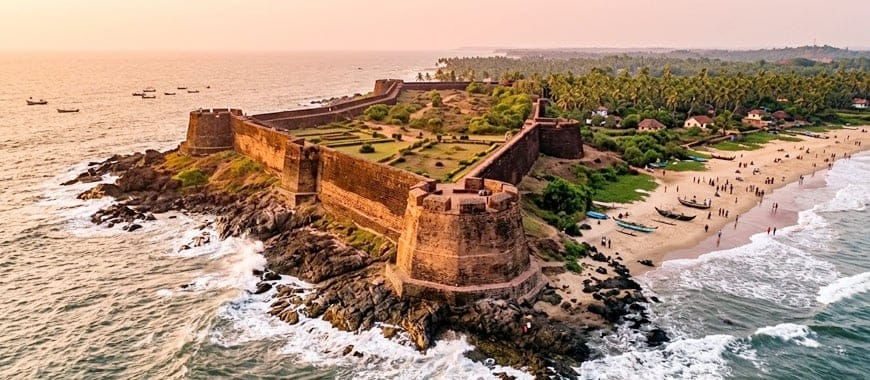

Bekal Fort, located in Kerala's Kasaragod district, is a popular destination for travellers interested in history, architecture and sea views. Its massive fortifications and coastal setting make it a memorable excursion from Mangalore. Travelling by private taxi gives you the flexibility to plan your departure, spend time exploring the fort and return according to your schedule.

What makes Bekal Fort special?
Bekal Fort is known for its extensive laterite walls, observation points and dramatic views of the Arabian Sea. The fort offers an opportunity to explore Kerala's coastal history while enjoying the surrounding landscape. Wear comfortable footwear because exploring the grounds involves walking across uneven surfaces and steps.
Things to see during your visit
1. Historic fort walls
Walk through the accessible sections of the fort and observe its distinctive defensive design. Follow signs and visitor instructions, and avoid restricted areas.
2. Arabian Sea viewpoints
The fort's coastal position provides striking sea views. Take photographs from permitted areas and be cautious around edges, particularly during windy or rainy weather.
3. Bekal beach surroundings
The nearby coastal area can complement a fort visit, depending on available time and local conditions. Check access and safety guidance before entering the water or walking along unfamiliar stretches of coastline.
How to plan a Mangalore to Bekal trip
Bekal is north of Mangalore, and the journey crosses the Karnataka–Kerala border region. The actual drive time depends on your pickup point, traffic, roadworks and weather. Before departure, confirm the route and allow enough time for the fort, breaks and the return drive.
Can Bekal be a family day trip?
Yes, it can be a good option for families who enjoy history and coastal scenery. Consider the walking distance, steps, weather and mobility needs of everyone in your group. Carry drinking water, sun protection and comfortable shoes. Keep children within safe, permitted visitor areas.
What is the best time to visit?
Weather and visitor comfort vary throughout the year. Milder weather can make walking around the fort more comfortable, while monsoon rain may make surfaces slippery and affect visibility. Check local conditions before travelling and plan outdoor sightseeing accordingly.
Why take a taxi from Mangalore?
- Private pickup from your home, hotel or another agreed location.
- Convenient travel for families, couples and small groups.
- Flexibility to arrange breaks and additional stops by agreement.
- Vehicle choices to suit passenger numbers and luggage.
- A planned return journey without needing to coordinate multiple transport connections.
Book a Mangalore to Bekal taxi
Radhakrishna Taxi Service can help you enquire about a taxi for your Bekal visit. Share your travel date, pickup location, passenger count and preferred return time. Confirm the fare, waiting time, tolls, parking and any additional stops before your booking is finalised.
Plan your Bekal coastal trip
Contact Radhakrishna Taxi Service to discuss your travel requirements.